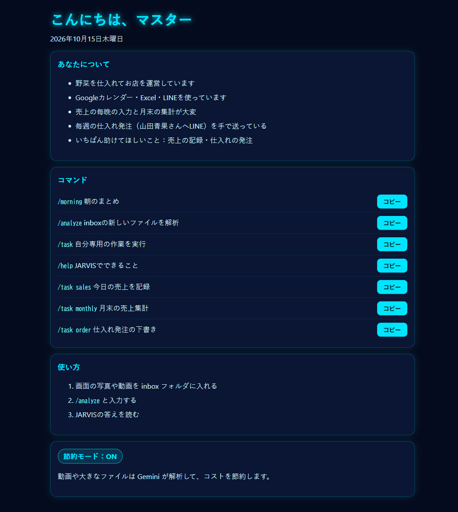

Claude Code を、あなた専用のAIアシスタントにするキット
スクショと動画を入れるだけで、あなたの日課に合わせた自分専用の作業とダッシュボードを作る（結果は画面の内容によります）、Claude Code 用のスターターパック「PushStart AI」です。コードを書く必要も、長いマニュアルを読む必要もありません。
Claude Code のインストールから、あなた専用の設定まで、ダブルクリックと数回の操作で済みます。（Claude の有料プランは別途必要です）
※動画は早送りしています。
※Claude の有料プラン（Pro 等）または API の契約が別途必要です。購入前の注意は、このページの下にまとめています。
3ステップで始められます
- セットアップファイルをダブルクリックします（Windows / Mac）
- 開いたフォルダに、普段の仕事の画面のスクショ（と動画）を入れます
- AIに名前を付けます。あなたの日課を読み取って、自分専用の作業とダッシュボードを作ります
セットアップ中とAIとの会話には、文字だけのウィンドウを使います。専門的なコマンドを打つ必要はありません。
できること
- Windows / Mac のワンクリックセットアップ（公式インストーラーで Claude Code と必要なツールを導入）
- 基本のコマンド（
/morningで朝のまとめ など）と、あなたの作業に合わせた自分専用の作業 - 自分専用のダッシュボード
- 動画・大きなファイルは Google Gemini に回して Claude の使用量を節約（無料枠あり）
- 節約・標準・パワーの3つのモードから選べます
- 困ったときは、同梱のヘルプ用の文章を Claude に貼りつければ案内してもらえます
- クリーンな Mac と Windows で、セットアップを自動テスト済みです

PushStart AI を入れると、何が変わる？
Claude Code は、公式の手順で自分で入れて使えます。PushStart AI は、そのあとの「あなた用に整える」作業を、まとめて済ませるものです。
- 準備がダブルクリックで済む：Claude Code と必要なツールを自動で入れます。（自分で入れる場合は、コマンドを打つ手順があります）
- 使えるコマンドが最初から入っている：朝のまとめ（/morning）、新しいファイルの解析（/analyze）、調べ物（/research）などの基本のコマンドを、最初から用意しています。あなたの名前や日課を覚えて答えるので、毎回同じ説明を打たなくて済みます。さらに、よく使う作業は「/task 名前」の自分専用コマンドとして増やせます。
- AIに名前を付けられる：名前を付けると、あなたの仕事のやり方を学んで、あなた向けに話してくれます。
- 節約して使える切り替え機能つき：AIの「考える力」を、節約・ふつう・パワーの3段階で切り替えられます。簡単な質問は安く、難しい相談は賢く。動画や大きなファイルは Google Gemini（無料枠あり）に任せて、使う分を減らします。
- 困ったときにすぐ聞ける：Claude に貼りつけるだけで、一歩ずつ教えてくれる「ヘルプ用の文章」が付いています。
- 新しい機能を教えてくれて、使い方も聞ける：新しい機能が出たら、あなたの使い方に合わせて「こう役立つ」と知らせます。気になったら「これ、私も使ったほうがいい？」と聞けば、どう使えるかを案内します。
※例です。スクショや動画から作られる自分専用の作業は、画面の内容によって結果が変わります。
Claude Code は、システム作りだけじゃない。面倒な手続きも任せられます（私が最近やった実例）
プログラムを作るだけでなく、世の中の「面倒だな」と思う手続きも、話しかけるだけで進めてもらえます。
これらは Claude Code 本体でできたことで、PushStart AI に入っている機能ではありません。（ブラウザを操作する拡張機能を、別に設定して使いました）
- 新幹線のきっぷの手配：日付・区間・人数・座席の希望を話しかけると、予約サイトでの検索と座席の選択を進めてくれました。ログインとカード会社の本人確認は、自分で行います。
- サイトの登録・更新作業：飲食店の紹介ページ（グルメサイトなど）の文章案を作り、各サイトの入力欄へ入れるところまでを、ほぼ任せました。ログインと最後の確認は自分でします。
- 毎日の投稿や口コミ返信の自動化：note の記事に書きました。
お金が動く操作や、公開する前の確認は、必ず自分で行ってください。いつも思いどおりに動くとは限りません。
こんな方に向いています
- 設定ファイルやコマンド操作が苦手で、ダブルクリックから始めたい方
- 普段の仕事の画面を見せて、自分用のコマンドとダッシュボードを作ってほしい方
向かない方：自分で調べて組み立てるのが苦にならない方は、無料のテンプレートや Claude Code の /agents でも十分です。Claude の有料プラン（または API 契約）をお持ちでない方も、先にそちらが必要です。
購入先（ストアごとに価格を設定しています）
価格はストア（プラットフォーム）ごとに設定しています。個別のお値引き・通貨変更には対応しておりません。
ご購入前に必ずお読みください
- Claude の有料プラン（Pro または Max）、または Anthropic API の契約が別途必要です。本商品には含まれません。（目安：Pro は月額20ドル（約3,100円）、年払いなら月17ドル（約2,700円）相当。税別、1ドル=157円で計算した目安（2026年10月22日時点）で、ドル額は2026年10月時点の公式表示です。為替や支払い方法で変わるため、最新は Anthropic の公式ページでご確認ください）切り替え方：claude.ai にログインし、https://claude.ai/upgrade を開いて Pro を選びます（スマホアプリは各アプリストアで価格を確認できます）。
- Claude は Anthropic 社が対応する国・地域で、18歳以上の方のみ利用できます（対応国）。
- Windows 10/11 または macOS、インターネット接続が必要です。
- 初回は Claude へのログインが必要です。Mac では公式の Node.js インストーラーが開く場合があります。
- コード署名をしていないため、初回に Windows / Mac のセキュリティ警告が出ます。案内に沿って進めてください。
- Gemini の無料枠では、送った内容が Google の製品改善に使われる場合があります。EEA・スイス・英国では有料キーをおすすめします。
- ダウンロード商品のため、返品・キャンセルは原則お受けできません。記載の動作環境を満たしているのに動作せず解決できない場合や、法令で求められる場合はご相談ください。
よくある質問
プログラミングの経験がなくても使えますか？
コードを書く必要はありません。ただ、初回のログインやセキュリティ警告の操作など、数回のクリックは必要です。手順は同梱のガイドにあります。
映画のような自分専用のAIアシスタントを作る簡単な方法はありますか？
このパックは、そのための入口として作りました。ダブルクリックでセットアップし、普段の画面のスクショを渡すと、あなたの日課に合わせた自分専用の作業とダッシュボードを作ります。
GitHubの無料テンプレートや、Claude Code の /agents コマンドで自作するのと何が違いますか？
無料のテンプレートや /agents でも、自分専用のエージェントは作れます。このパックは、設定ファイルやコマンド操作に慣れていない方向けに、ダブルクリックで始め、普段の画面のスクショを渡すと日課に合わせた自分専用の作業とダッシュボードまで作る流れにまとめたものです。自分で調べて組み立てるのが苦にならない方は、無料のものでも十分です。
Claude の契約は含まれていますか？
含まれていません。Claude の有料プラン（Pro 等）または API の契約が別途必要です。
Mac でも Windows でも使えますか？
どちらにも対応しています。
困ったときは？
同梱のヘルプ用の文章を Claude に貼り付けてご相談ください。解決しない場合は、下の問い合わせフォームからご連絡ください。
Turn Claude Code into your own AI assistant
PushStart AI is a starter pack for Claude Code. Drop in screenshots and videos of your daily work, and it builds custom commands and a dashboard for your routine. No coding. No long manual.
From installing Claude Code to a setup built around your own routine: a double-click and a few steps. (A paid Claude plan is required separately.)
The video is sped up.
* A paid Claude plan (Pro/Max) or an Anthropic API account is required separately. Please read the notes below before buying.
Three steps
- Double-click the setup file (Windows / Mac)
- Drop screenshots (and videos) of your daily work into the folder that opens
- Name your agent. It reads your routine and builds your own commands and dashboard
A text-only window is used during setup and when chatting with the agent. You don't need to type technical commands.
What you get
- One-click setup for Windows and Mac (installs Claude Code and required tools with official installers)
- Basic commands from day one (
/morningbriefing and more), plus your own tasks built from your real routine - A personal dashboard
- Videos and big files go to Google Gemini (free tier available) to save Claude usage
- Choose Saver, Standard or Power mode
- Self-help support prompt: paste it into Claude and it walks you through problems
- Setup tested automatically on clean macOS and Windows
What changes when you add PushStart AI?
You can install and use Claude Code yourself by following the official steps. PushStart AI takes care of the part after that: setting it up around you, all in one go.
- Setup is a double-click: It installs Claude Code and the tools it needs for you. (Doing it yourself means typing install commands.)
- Ready-made commands from day one: Basic commands are included from the start: /morning (morning briefing), /analyze (analyze new files), /research (web research) and more. They remember your name and routine, so you do not re-explain every time. You can also add your own tasks as "/task name" commands.
- Name your agent: Give it a name; it learns how you work and talks to you accordingly.
- Switchable thinking levels to save usage: You can switch the AI between Saver, Standard and Power thinking levels (cheap for simple questions, stronger for hard ones). Videos and big files go to Google Gemini (free tier available).
- Help when you are stuck: A self-help prompt you paste into Claude, which walks you through the problem step by step.
- Tells you what is new: When new features come out, it explains how they help you; if one looks interesting, just ask "should I use this?" and it shows you how.
*Examples only. The personal tasks built from your screenshots and videos depend on what your screens show; results vary.
Not just for building systems — it handles tedious procedures too (real examples from my own use)
Claude Code is not only for building software. It can also take on the tedious online procedures and paperwork of everyday life: you tell it what you need, and it does the legwork.
These are things Claude Code itself did — they are not features included in PushStart AI. (A browser-control extension was set up separately.)
- Booking train tickets: I told it the dates, route, party size and seat preferences; it searched the booking site and picked seats. I logged in and did the card-issuer authentication myself.
- Filling in site listings: it drafted descriptions for a restaurant's listing sites and entered them into the forms. I logged in and checked everything at the end.
- Daily posting and review replies on autopilot: described in this article (Japanese).
Always check anything involving money or publishing yourself. It does not always work as expected.
Who it's for
- You are not comfortable with config files or commands and want to start with a double-click
- You want to show screenshots of your daily work and get your own commands and dashboard built
Not for you if: you are happy to research and assemble things yourself. Free templates or Claude Code's /agents work fine for that. You also need a paid Claude plan (or API account) first.
Where to buy (prices are set per store)
Prices are fixed per store, set to match each platform's specifications, exchange rates and local tax rules. We cannot accept individual discount or currency-change requests.
Please read before buying
- A paid Claude plan (Pro or Max) or an Anthropic API account is required. It is not included. (Guide: Pro is $20/month, or $17/month billed annually, before tax, as listed on Anthropic's site in October 2026. Prices may change; please check Anthropic's official page.) To upgrade: log in at claude.ai, open https://claude.ai/upgrade and choose Pro (on mobile, prices are shown in your app store).
- Claude is available only in Anthropic's supported countries and regions, for users 18+.
- Windows 10/11 or macOS, and an internet connection.
- First run needs a Claude login. On Mac, the official Node.js installer may open.
- Scripts are not code-signed, so Windows/Mac show a one-time security warning.
- On Gemini's free tier, Google may use submitted content to improve its products. In the EEA, Switzerland and the UK, a paid key is recommended.
- Digital content is generally non-refundable once downloaded. If your PC meets the requirements and it still doesn't work, or where the law requires it, please contact us.
FAQ
Do I need to know how to code?
No coding is needed. A few clicks are still required for the first login and the one-time security warning; the guide shows each step.
How can a beginner set up a personal AI agent?
Double-click the setup file, drop screenshots of your daily work into a folder, and name your agent. It builds custom commands and a dashboard for your routine.
How is this different from free GitHub templates or building an agent with Claude Code's /agents command?
Free templates and /agents can also build a personal agent. This pack is for people who are not used to config files or commands: you double-click to start, give it screenshots of your daily work, and it builds custom commands and a dashboard for your routine. If you are comfortable assembling things yourself, the free options work fine.
Is a Claude subscription included?
No. A paid Claude plan (Pro/Max) or an Anthropic API account is required separately.
Does it work on Mac and Windows?
Yes, both.
What if I get stuck?
Paste the included support prompt into Claude and it will walk you through it. If that doesn't solve it, use the contact form below.
حوّل Claude Code إلى مساعدك الذكي الخاص
PushStart AI حزمة بداية لـ Claude Code. ضع لقطات شاشة ومقاطع فيديو من عملك اليومي، وسينشئ لك أوامر ولوحة تحكم تناسب روتينك. بلا برمجة وبلا دليل طويل.
من تثبيت Claude Code إلى إعداد يناسب روتينك: نقرتان وبضع خطوات. (يلزم اشتراك Claude مدفوع بشكل منفصل.)
الفيديو بالإنجليزية.
* يلزم اشتراك Claude مدفوع (Pro/Max) أو حساب Anthropic API بشكل منفصل. يُرجى قراءة الملاحظات أدناه قبل الشراء.
ثلاث خطوات
- انقر مرتين على ملف الإعداد (Windows / Mac)
- ضع لقطات شاشة (ومقاطع فيديو) من عملك اليومي في المجلد الذي يُفتح
- سمِّ مساعدك. سيقرأ روتينك وينشئ أوامرك ولوحة التحكم الخاصة بك
ماذا ستحصل عليه
- إعداد بنقرة واحدة لنظامي Windows وMac (يثبّت Claude Code والأدوات اللازمة بالمثبّتات الرسمية)
- أوامر أساسية جاهزة من اليوم الأول (مثل /morning للملخص الصباحي)، إضافةً إلى مهامك الخاصة المبنية على روتينك الفعلي
- لوحة تحكم شخصية
- تُرسل الفيديوهات والملفات الكبيرة إلى Google Gemini (توجد باقة مجانية) لتوفير استهلاك Claude
- اختر وضع التوفير أو العادي أو القوة
- نص مساعدة ذاتية: الصقه في Claude ليرشدك خطوة بخطوة عند أي مشكلة
ماذا يتغيّر عند إضافة PushStart AI؟
- الإعداد بنقرتين: يثبّت Claude Code والأدوات التي يحتاجها نيابةً عنك.
- أوامر جاهزة: /morning و/analyze و/research وغيرها، وتتذكر اسمك وروتينك.
- سمِّ مساعدك: يتعلّم طريقة عملك ويخاطبك وفقًا لها.
- مستويات تفكير قابلة للتبديل لتوفير الاستهلاك: رخيص للأسئلة البسيطة وأقوى للصعبة.
* أمثلة فقط. المهام المبنية من لقطات شاشتك تعتمد على ما تعرضه شاشتك، وقد تختلف النتائج.
لمن هذا المنتج؟
لمن لا يرتاح لملفات الإعداد والأوامر ويريد البدء بنقرتين. ليس مناسبًا لك إن كنت تفضّل تجميع كل شيء بنفسك.
اقرأ قبل الشراء
الشروط الكاملة (الاسترداد، الدول المدعومة، الأسعار) أدناه بالإنجليزية، وهي النص المعتمد. هذه الترجمة للمساعدة فقط.
Please read before buying
- A paid Claude plan (Pro or Max) or an Anthropic API account is required. It is not included. (Guide: Pro is $20/month, or $17/month billed annually, before tax, as listed on Anthropic's site in October 2026. Prices may change; please check Anthropic's official page.) To upgrade: log in at claude.ai, open https://claude.ai/upgrade and choose Pro (on mobile, prices are shown in your app store).
- Claude is available only in Anthropic's supported countries and regions, for users 18+.
- Windows 10/11 or macOS, and an internet connection.
- First run needs a Claude login. On Mac, the official Node.js installer may open.
- Scripts are not code-signed, so Windows/Mac show a one-time security warning.
- On Gemini's free tier, Google may use submitted content to improve its products. In the EEA, Switzerland and the UK, a paid key is recommended.
- Digital content is generally non-refundable once downloaded. If your PC meets the requirements and it still doesn't work, or where the law requires it, please contact us.
Prices are fixed per store, set to match each platform's specifications, exchange rates and local tax rules. We cannot accept individual discount or currency-change requests.
أسئلة شائعة
هل أحتاج إلى معرفة البرمجة؟
لا. لكن تلزم بضع نقرات عند أول تسجيل دخول وعند تحذير الأمان لمرة واحدة؛ الدليل يشرح كل خطوة.
هل الاشتراك في Claude مشمول؟
لا. يلزم اشتراك Claude مدفوع (Pro/Max) أو حساب Anthropic API بشكل منفصل.
هل يعمل على Mac وWindows؟
نعم، كلاهما.
把 Claude Code 變成你專屬的 AI 助理
PushStart AI 是 Claude Code 的入門套件。把你日常工作的螢幕截圖和影片放進去，它會依你的作息建立專屬指令和儀表板。不需寫程式，也沒有厚厚的說明書。
從安裝 Claude Code 到依你的作息完成設定：雙擊一下，再跑幾個步驟。（需另外訂閱付費的 Claude 方案。）
影片為英文。
※ 需另外訂閱付費的 Claude 方案（Pro/Max）或擁有 Anthropic API 帳號。購買前請先閱讀下方說明。
三個步驟
- 雙擊安裝檔（Windows / Mac）
- 把日常工作的螢幕截圖（和影片）放進開啟的資料夾
- 為你的助理取個名字。它會讀取你的作息，建立專屬指令和儀表板
內容
- Windows 與 Mac 一鍵安裝（用官方安裝程式安裝 Claude Code 與必要工具）
- 第一天就有基本指令（例如 /morning 早晨摘要），另有依你實際作息建立的專屬任務
- 個人儀表板
- 影片與大型檔案交給 Google Gemini（有免費額度），節省 Claude 用量
- 可選擇省錢、標準、強力三種模式
- 自助支援提示詞：貼到 Claude，它會一步步帶你解決問題
加入 PushStart AI 後有什麼不同？
- 雙擊完成安裝：自動幫你裝好 Claude Code 與所需工具。
- 第一天就有現成指令：/morning、/analyze、/research 等，並記得你的名字與作息。
- 為助理取名：它會學習你的工作方式並據此與你對話。
- 可切換思考等級以節省用量：簡單問題用省錢模式，困難問題用更強的模式。
※ 僅為範例。依螢幕截圖與影片建立的專屬任務取決於你畫面上的內容，結果會有所不同。
適合誰
不習慣設定檔與指令、想用雙擊開始的人。如果你喜歡自己研究組裝，就不適合。
購買前請閱讀
完整條款（退款、支援地區、價格）以下方英文為準。本翻譯僅供參考。
Please read before buying
- A paid Claude plan (Pro or Max) or an Anthropic API account is required. It is not included. (Guide: Pro is $20/month, or $17/month billed annually, before tax, as listed on Anthropic's site in October 2026. Prices may change; please check Anthropic's official page.) To upgrade: log in at claude.ai, open https://claude.ai/upgrade and choose Pro (on mobile, prices are shown in your app store).
- Claude is available only in Anthropic's supported countries and regions, for users 18+.
- Windows 10/11 or macOS, and an internet connection.
- First run needs a Claude login. On Mac, the official Node.js installer may open.
- Scripts are not code-signed, so Windows/Mac show a one-time security warning.
- On Gemini's free tier, Google may use submitted content to improve its products. In the EEA, Switzerland and the UK, a paid key is recommended.
- Digital content is generally non-refundable once downloaded. If your PC meets the requirements and it still doesn't work, or where the law requires it, please contact us.
Prices are fixed per store, set to match each platform's specifications, exchange rates and local tax rules. We cannot accept individual discount or currency-change requests.
常見問題
需要會寫程式嗎？
不需要。第一次登入與一次性的安全警告需要點幾下，說明文件會逐步指引。
包含 Claude 訂閱嗎？
不包含。需另外訂閱付費的 Claude 方案（Pro/Max）或擁有 Anthropic API 帳號。
Mac 和 Windows 都能用嗎？
都可以。
把 Claude Code 变成你专属的 AI 助手
PushStart AI 是 Claude Code 的入门套件。把你日常工作的屏幕截图和视频放进去，它会根据你的作息生成专属指令和仪表板。无需编程，也没有冗长的说明书。
从安装 Claude Code 到按你的作息完成设置：双击一下，再走几个步骤。（需另外订阅付费的 Claude 套餐。）
视频为英文。
※ 需另外订阅付费的 Claude 套餐（Pro/Max）或拥有 Anthropic API 账号。购买前请先阅读下方说明。
三个步骤
- 双击安装文件（Windows / Mac）
- 把日常工作的屏幕截图（和视频）放进打开的文件夹
- 给你的助手起个名字。它会读取你的作息，生成专属指令和仪表板
内容
- Windows 与 Mac 一键安装（用官方安装程序安装 Claude Code 及必要工具）
- 第一天就有基本指令（如 /morning 早间摘要），另有按你实际作息生成的专属任务
- 个人仪表板
- 视频和大文件交给 Google Gemini（有免费额度），节省 Claude 用量
- 可选择省钱、标准、强力三种模式
- 自助支持提示词：粘贴到 Claude，它会一步步带你解决问题
加入 PushStart AI 后有什么不同？
- 双击完成安装：自动帮你装好 Claude Code 及所需工具。
- 第一天就有现成指令：/morning、/analyze、/research 等，并记住你的名字和作息。
- 给助手起名：它会学习你的工作方式并据此与你对话。
- 可切换思考等级以节省用量：简单问题用省钱模式，难题用更强的模式。
※ 仅为示例。根据屏幕截图和视频生成的专属任务取决于你屏幕上的内容，结果会有所不同。
适合谁
不习惯配置文件和命令、想用双击开始的人。如果你喜欢自己研究组装，就不适合。
购买前请阅读
完整条款（退款、支持地区、价格）以下方英文为准。本翻译仅供参考。
Please read before buying
- A paid Claude plan (Pro or Max) or an Anthropic API account is required. It is not included. (Guide: Pro is $20/month, or $17/month billed annually, before tax, as listed on Anthropic's site in October 2026. Prices may change; please check Anthropic's official page.) To upgrade: log in at claude.ai, open https://claude.ai/upgrade and choose Pro (on mobile, prices are shown in your app store).
- Claude is available only in Anthropic's supported countries and regions, for users 18+.
- Windows 10/11 or macOS, and an internet connection.
- First run needs a Claude login. On Mac, the official Node.js installer may open.
- Scripts are not code-signed, so Windows/Mac show a one-time security warning.
- On Gemini's free tier, Google may use submitted content to improve its products. In the EEA, Switzerland and the UK, a paid key is recommended.
- Digital content is generally non-refundable once downloaded. If your PC meets the requirements and it still doesn't work, or where the law requires it, please contact us.
Prices are fixed per store, set to match each platform's specifications, exchange rates and local tax rules. We cannot accept individual discount or currency-change requests.
常见问题
需要会编程吗？
不需要。第一次登录和一次性的安全警告需要点几下，说明文档会逐步指引。
包含 Claude 订阅吗？
不包含。需另外订阅付费的 Claude 套餐（Pro/Max）或拥有 Anthropic API 账号。
Mac 和 Windows 都能用吗？
都可以。
Claude Code를 나만의 AI 비서로
PushStart AI는 Claude Code용 스타터 팩입니다. 일상 업무 화면의 스크린샷과 영상을 넣으면, 내 루틴에 맞는 전용 명령어와 대시보드를 만들어 줍니다. 코딩도, 두꺼운 매뉴얼도 필요 없습니다.
Claude Code 설치부터 내 루틴에 맞춘 설정까지: 더블클릭 한 번과 몇 단계면 됩니다. (유료 Claude 요금제는 별도로 필요합니다.)
영상은 영어입니다.
※ 유료 Claude 요금제(Pro/Max) 또는 Anthropic API 계정이 별도로 필요합니다. 구매 전에 아래 안내를 꼭 읽어 주세요.
세 단계
- 설치 파일을 더블클릭 (Windows / Mac)
- 열린 폴더에 일상 업무의 스크린샷(과 영상)을 넣기
- 비서에게 이름을 붙이기. 내 루틴을 읽고 전용 명령어와 대시보드를 만들어 줍니다
구성
- Windows·Mac 원클릭 설치 (공식 설치 프로그램으로 Claude Code와 필요한 도구 설치)
- 첫날부터 쓸 수 있는 기본 명령어(/morning 아침 요약 등)와 실제 루틴으로 만든 나만의 작업
- 개인 대시보드
- 영상과 큰 파일은 Google Gemini(무료 한도 있음)로 보내 Claude 사용량 절약
- 절약·표준·파워 모드 선택
- 셀프 지원 프롬프트: Claude에 붙여 넣으면 문제를 단계별로 안내
PushStart AI를 넣으면 무엇이 달라지나요?
- 더블클릭으로 설치 끝: Claude Code와 필요한 도구를 대신 설치합니다.
- 첫날부터 쓸 수 있는 명령어: /morning, /analyze, /research 등. 이름과 루틴을 기억합니다.
- 비서에게 이름 붙이기: 내 업무 방식을 익혀 그에 맞게 말합니다.
- 사용량을 아끼는 사고 수준 전환: 간단한 질문은 저렴하게, 어려운 질문은 더 강하게.
※ 예시일 뿐입니다. 스크린샷과 영상으로 만들어지는 전용 작업은 화면 내용에 따라 달라지며 결과는 다를 수 있습니다.
이런 분께
설정 파일과 명령어가 익숙하지 않아 더블클릭으로 시작하고 싶은 분. 직접 조립하는 것이 즐거운 분에게는 맞지 않습니다.
구매 전 꼭 읽어 주세요
전체 약관(환불, 지원 국가, 가격)은 아래 영어 원문이 기준입니다. 이 번역은 참고용입니다.
Please read before buying
- A paid Claude plan (Pro or Max) or an Anthropic API account is required. It is not included. (Guide: Pro is $20/month, or $17/month billed annually, before tax, as listed on Anthropic's site in October 2026. Prices may change; please check Anthropic's official page.) To upgrade: log in at claude.ai, open https://claude.ai/upgrade and choose Pro (on mobile, prices are shown in your app store).
- Claude is available only in Anthropic's supported countries and regions, for users 18+.
- Windows 10/11 or macOS, and an internet connection.
- First run needs a Claude login. On Mac, the official Node.js installer may open.
- Scripts are not code-signed, so Windows/Mac show a one-time security warning.
- On Gemini's free tier, Google may use submitted content to improve its products. In the EEA, Switzerland and the UK, a paid key is recommended.
- Digital content is generally non-refundable once downloaded. If your PC meets the requirements and it still doesn't work, or where the law requires it, please contact us.
Prices are fixed per store, set to match each platform's specifications, exchange rates and local tax rules. We cannot accept individual discount or currency-change requests.
자주 묻는 질문
코딩을 알아야 하나요?
아니요. 첫 로그인과 일회성 보안 경고에서 몇 번 클릭이 필요하며, 안내서가 단계별로 알려 줍니다.
Claude 구독이 포함되어 있나요?
아니요. 유료 Claude 요금제(Pro/Max) 또는 Anthropic API 계정이 별도로 필요합니다.
Mac과 Windows 모두 되나요?
네, 둘 다 됩니다.
Convierte Claude Code en tu propio asistente de IA
PushStart AI es un paquete inicial para Claude Code. Añade capturas de pantalla y vídeos de tu trabajo diario y creará comandos y un panel a la medida de tu rutina. Sin programar y sin manuales largos.
De instalar Claude Code a una configuración hecha a tu medida: un doble clic y unos pocos pasos. (Se necesita aparte un plan de pago de Claude.)
El vídeo está en inglés.
* Se necesita aparte un plan de pago de Claude (Pro/Max) o una cuenta de la API de Anthropic. Lee las notas de abajo antes de comprar.
Tres pasos
- Haz doble clic en el archivo de instalación (Windows / Mac)
- Pon capturas de pantalla (y vídeos) de tu trabajo diario en la carpeta que se abre
- Ponle nombre a tu asistente. Leerá tu rutina y creará tus comandos y tu panel
Qué incluye
- Instalación con un clic para Windows y Mac (instala Claude Code y las herramientas necesarias con los instaladores oficiales)
- Comandos básicos desde el primer día (como /morning, el resumen matutino), más tareas propias creadas a partir de tu rutina real
- Un panel personal
- Los vídeos y archivos grandes van a Google Gemini (con nivel gratuito) para ahorrar uso de Claude
- Elige el modo Ahorro, Estándar o Potencia
- Texto de autoayuda: pégalo en Claude y te guía paso a paso ante cualquier problema
¿Qué cambia al añadir PushStart AI?
- La instalación es un doble clic: instala por ti Claude Code y las herramientas que necesita.
- Comandos listos desde el primer día: /morning, /analyze, /research y más; recuerdan tu nombre y tu rutina.
- Ponle nombre a tu asistente: aprende cómo trabajas y te habla en consecuencia.
- Niveles de razonamiento intercambiables para ahorrar uso: barato para preguntas simples, más potente para las difíciles.
* Solo ejemplos. Las tareas creadas a partir de tus capturas y vídeos dependen de lo que muestren tus pantallas; los resultados varían.
Para quién es
Para quien no se siente cómodo con archivos de configuración ni comandos y quiere empezar con un doble clic. No es para ti si prefieres montarlo todo por tu cuenta.
Léelo antes de comprar
Las condiciones completas (reembolsos, países compatibles, precios) están abajo en inglés y son el texto vinculante. Esta traducción es solo orientativa.
Please read before buying
- A paid Claude plan (Pro or Max) or an Anthropic API account is required. It is not included. (Guide: Pro is $20/month, or $17/month billed annually, before tax, as listed on Anthropic's site in October 2026. Prices may change; please check Anthropic's official page.) To upgrade: log in at claude.ai, open https://claude.ai/upgrade and choose Pro (on mobile, prices are shown in your app store).
- Claude is available only in Anthropic's supported countries and regions, for users 18+.
- Windows 10/11 or macOS, and an internet connection.
- First run needs a Claude login. On Mac, the official Node.js installer may open.
- Scripts are not code-signed, so Windows/Mac show a one-time security warning.
- On Gemini's free tier, Google may use submitted content to improve its products. In the EEA, Switzerland and the UK, a paid key is recommended.
- Digital content is generally non-refundable once downloaded. If your PC meets the requirements and it still doesn't work, or where the law requires it, please contact us.
Prices are fixed per store, set to match each platform's specifications, exchange rates and local tax rules. We cannot accept individual discount or currency-change requests.
Preguntas frecuentes
¿Necesito saber programar?
No. Hacen falta unos clics en el primer inicio de sesión y en la advertencia de seguridad (una sola vez); la guía muestra cada paso.
¿Incluye la suscripción a Claude?
No. Se necesita aparte un plan de pago de Claude (Pro/Max) o una cuenta de la API de Anthropic.
¿Funciona en Mac y Windows?
Sí, en ambos.